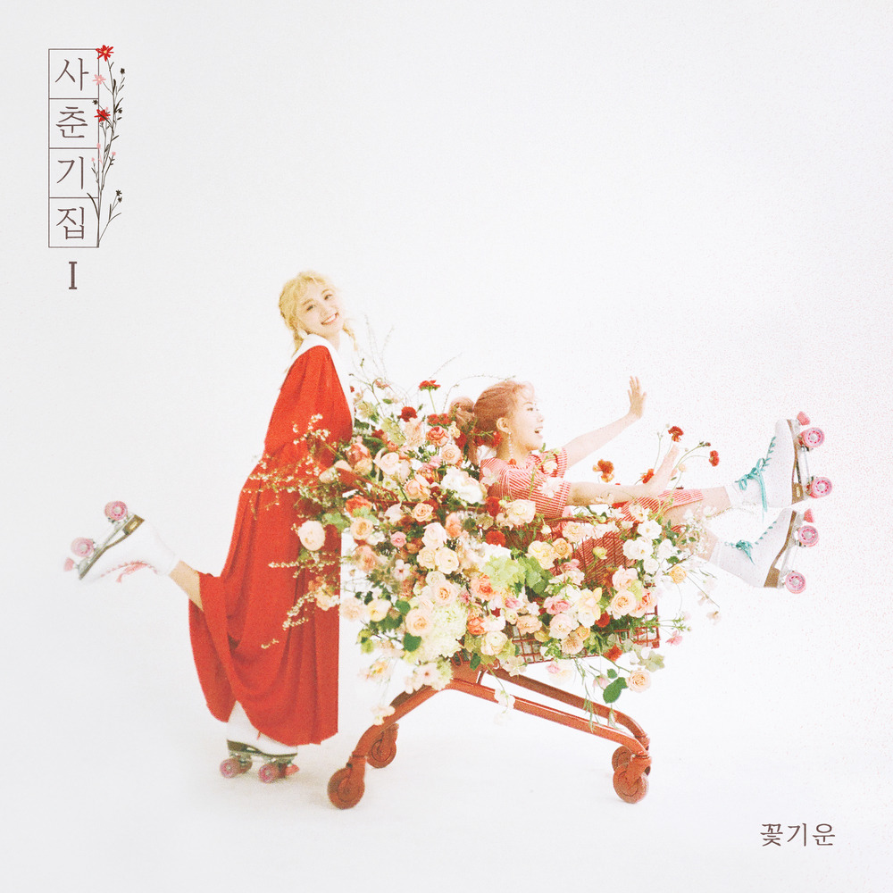

안녕하세요, 라보엠입니다.
오늘은 봄바람이 살랑이는 이 계절에 꼭 어울리는 곡, 볼빨간 사춘기의 나만, 봄을 소개해드리려고 합니다. 따뜻한 햇살과 함께 찾아오는 설렘, 그리고 사랑에 빠진 순간의 두근거림을 담은 이 노래는 발매 이후로 많은 사랑을 받으며 봄 하면 떠오르는 대표곡으로 자리 잡았죠. 볼빨간 사춘기는 특유의 맑고 상큼한 음색, 그리고 감성적인 가사로 많은 팬들의 사랑을 받고 있는 여성 듀오입니다. 나만, 봄은 2019년 4월에 발매된 곡으로, 볼빨간 사춘기만의 밝고 따뜻한 에너지가 가득 담겨 있습니다. 이 곡은 리드미컬한 기타 사운드와 경쾌한 멜로디 위에, 사랑에 빠진 소녀의 설렘을 솔직하게 표현한 가사가 인상적입니다.
곡의 분위기와 메시지
나만, 봄은 제목에서 알 수 있듯, ‘봄’이라는 계절이 주는 설렘과 사랑의 시작을 노래합니다. 사랑하는 사람 앞에서만 유독 더 설레고, 세상이 온통 내 편이 된 듯한 기분을 솔직하게 담아냈죠. 가사 곳곳에는 “나만, 봄이 온 것 같아”, “너만, 내 곁에 있으면 돼”처럼 사랑에 빠진 사람만이 느낄 수 있는 행복감이 가득합니다.
특히, 볼빨간 사춘기 특유의 청량한 보컬과 감각적인 편곡이 어우러져, 듣는 이로 하여금 자연스럽게 미소 짓게 만듭니다. 반복되는 후렴구는 금세 따라 부르게 되고, 봄날의 햇살처럼 기분 좋은 에너지를 전해줍니다.

뮤직비디오와 곡의 매력 포인트
나만, 봄의 뮤직비디오 역시 곡의 분위기처럼 사랑스럽고 따스합니다. 알록달록한 색감과 봄꽃이 가득한 배경 속에서 볼빨간 사춘기의 멤버들이 자유롭고 행복하게 노래하는 모습이 인상적이죠. 봄의 싱그러움과 첫사랑의 설렘을 동시에 느낄 수 있어, 보는 내내 기분이 좋아집니다.
이 곡의 가장 큰 매력은, 누구나 한 번쯤 겪어봤을 ‘사랑의 시작’이라는 감정을 솔직하고 담백하게 풀어냈다는 점입니다. 볼빨간 사춘기만의 풋풋한 감성은 듣는 이의 마음을 간질이며, 일상에 작은 설렘을 선물합니다.
이런 분들께 추천드려요
- 봄날의 산책길이나 드라이브에 어울리는 노래를 찾으시는 분
- 사랑에 빠진 설렘을 느끼고 싶은 분
- 볼빨간 사춘기의 맑은 음색과 감성적인 가사를 좋아하시는 분
나만, 봄은 혼자 들어도, 누군가와 함께 들어도 좋은 곡입니다. 특히, 사랑하는 사람과 함께라면 이 곡이 전하는 설렘이 배가될 거예요.
볼빨간 사춘기 나만 봄 노래 가사
1.
안돼 그만둬 거기까지 해
더 다가가면 너 정신 못 차려
안돼 그만해 꽃은 넣어둬
그냥 좀 바람이 불게 놔줘
왜 그럴까 사람들은 그냥 봄기운이 좋아
눈치 없이 밖을 나가는 걸까
왜 이럴까 뭐가 설렌다고 봄바람이 좋아
내 맘도 모르고 더 불어와
Flower sunshine 완벽한 하루를 사실
너와 걸을 수 있다면 얼마나 좋을까
좋아한다고 말하기가 무서워서
네 곁을 맴돌고 있는 난
벚꽃도 뭐고 다 필요 없어
나는 네 곁에 있고 싶어 딱 붙어서
봄이 지나갈 때까지
다른 사람 다 사라져라 나만 봄
2.
왜 그럴까 사람들은 그냥 봄기운이 좋아
눈치 없이 밖을 나가는 걸까
왜 이럴까 뭐가 설렌다고 봄바람이 좋아
내 맘도 모르고 더 불어와
Flower sunshine 완벽한 하루를 사실
너와 걸을 수 있다면 얼마나 좋을까
좋아한다고 말하기가 무서워서
네 곁을 맴돌고 있는 난
벚꽃도 뭐고 다 필요 없어
나는 네 곁에 있고 싶어 딱 붙어서
봄이 지나갈 때까지
다른 사람 다 사라져라
br.
언제 봄이 왔는지 내 맘도 모르고
봄바람이 자꾸만 불어와
네 곁에 딱 붙어서 떨어지지 않고 싶어
내 맘을 이제 말하고 싶어
벚꽃도 뭐고 다 필요 없어
나는 네 곁에 있고 싶어 딱 붙어서
봄이 지나갈 때까지
다른 사람 다 사라져라 나만 봄
맺음말
봄은 새로운 시작과 설렘의 계절이죠. 볼빨간 사춘기의 나만, 봄은 그런 봄의 감성을 고스란히 담아낸 곡입니다. 사랑에 빠진 순간의 두근거림, 그리고 그 설렘을 노래하는 이 곡을 들으며, 여러분도 오늘 하루만큼은 세상에서 가장 특별한 봄을 느껴보시길 바랍니다. 음악이 주는 작은 행복, 그리고 볼빨간 사춘기의 따뜻한 목소리와 함께하는 봄날. 나만, 봄과 함께 여러분의 하루가 더욱 특별해지길 바라며, 오늘의 노래 소개를 마치겠습니다.